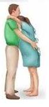
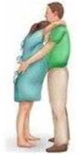
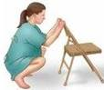

INFORMAÇÕES BÁSICAS PARA O ACOMPANHAMENTO DURANTE O TRABALHO DE
PARTO.
O trabalho de parto é um processo fisiológico individual e natural
que ocorre em cada mulher. Durante ele, o corpo da mulher é envolvido
numa série de alterações físicas, emocionais e hormonais, promovendo
um preparo no corpo dela, para o nascimento do bebê. Segue abaixo
algumas informações que servirão para esclarecer suas dúvidas e
orientar você em como acompanhar cada passo desse processo, cooperando
para uma assistência de qualidade á mãe e bebê.
IDADE GESTACIONAL
A idade gestacional esperada para o momento do parto varia entre a
37° e 42° semanas, entretanto, a maioria dos bebês nasce entre a 39° e
40° semanas. É importante lembrar que cada gravidez é única e pode
variar ligeiramente em duração.
DILATAÇÃO DO COLO DO ÚTERO
A dilatação do colo do útero se dá de 1 a 10 centímetros. Este é um dos estágios do trabalho de parto, geralmente, quando o bebê é movido para o canal do parto para o nascimento. A dilatação recomendada para a internação na maternidade se dá quando a dilatação está cerca de 4 a 5 centímetros. É importante lembrar que cada mulher e cada gravidez é única e o processo de dilatação se dá por vários fatores.
SINAIS E SINTOMAS NATURAIS ESPERADOS DE TRABALHO DE PARTO
Os sinais de trabalho de parto incluem dor regular, crescente e ondulada na região das costas, perda de tampão mucoso ou gosma sanguinolenta, rompimento da bolsa amniótica, aumento da pressão na região pélvica e possíveis náuseas, vômitos e até diarreia. É importante lembrar que os sinais e sintomas durante o trabalho de parto podem variar de mulher para mulher, e a evolução pode variar muito, então, tranquilize sua parturiente quanto a isso.
ALTERAÇÔES EMOCIONAIS NA MÃE
Várias mudanças hormonais ocorrem no corpo da mãe durante o trabalho
de parto que podem afetar suas emoções positiva e negativamente. Por
um lado, temos hormônios que é responsável por estimular as contrações
uterinas e promover a dilatação, ao mesmo tempo, ocasionando a dor,
ansiedade, medo, inquietação e impaciência. Diante disso, é importante
estimular pensamentos positivos, palavras de ânimo para que ela seja
encorajada a passar pelo processo natural do parto, promovendo a ela e
ao seu bebê o bem-estar.
AJUDA DO ACOMPANHANTE
Um acompanhante de trabalho de parto é uma peça fundamental e
importante para ajudar as mulheres a lidar com a dor e o desconforto
do trabalho de parto. Existem várias técnicas não medicamentosas que
podem ser utilizadas e orientadas por você para diminuir a dor e
promover conforto no trabalho de parto. Dentre eles, a massagem,
caminhada, exercícios respiratórios, banhos e apoio emocional. A
massagem pode ajudar a soltar a tensão muscular e aliviar a dor;
caminhar pode ajudar o bebê a manter uma boa postura; exercícios
respiratórios podem ajudá-la a controlar a dor e manter a calma
durante o trabalho de parto; um banho pode ajudá-la a relaxar e
aliviar a dor. E além disso, um acompanhante pode fornecer apoio
emocional, encorajar a mulher e ajudar a manter uma atitude positiva,
o que pode ser uma experiência gratificante.
A MÃE DEVE SE ALIMENTAR BEM
É importante comer bem e de acordo com a dieta prescrita pelo médico,
durante o trabalho de parto para fornecer a energia e os nutrientes
que ela e o seu bebê precisam. Ajudando a prevenir problemas nos
batimentos cardíacos do bebê. Estimula a alimentação é promover o
bem-estar emocional da mãe e proporcionar conforto durante momentos
intensos e difíceis como o trabalho de parto.
ALGUMAS POSIÇÕES DURANTE O TRABALHO DE PARTO
Segue algumas posições que favorecem para o parto, como em pé,
agachada ou encostada em uma superfície vertical para permitir que a
gravidade ajude no processo de parto, ela ajuda descida do bebê,
inclusive, em pé, reduz a pressão sobre o períneo, reduz o risco de
lacerações e traumas. Além disso, a posição ereta permite que a
parturiente se movimente e encontre a posição mais confortável durante
o trabalho de parto, reduzindo assim a dor e a necessidade de
intervenção médica.
AMAMENTAÇÃO
A amamentação é fundamental para a saúde do bebê e da mãe. O leite
humano é rico em nutrientes, anticorpos e outros componentes que
protegem os bebês de infecções e outras doenças e promovem o
desenvolvimento físico e cognitivo adequado. Para as mães, a
amamentação ajuda a reduzir o risco de câncer de mama, osteoporose e
outros problemas de saúde. É importante lembrar que para realizar uma
boa pega do bebê, ele deve abocanhar todo o mamilo e a maior parte da
aréola da mãe.
CONTATO PELE A PELE
O contato pele a pele se dá pelo contato do bebê sobre a pele da mãe,
é um momento importante para a saúde e o desenvolvimento do seu bebê,
promovendo a liberação de hormônios que ajudam a regular a
temperatura, o açúcar no sangue e a respiração do bebê. Além disso,
estabiliza os batimentos cardíacos do bebê, promove o vínculo afetivo
entre mãe e bebê, reduz o estresse, favorece a amamentação e estimula
o reflexo de sucção no bebê.